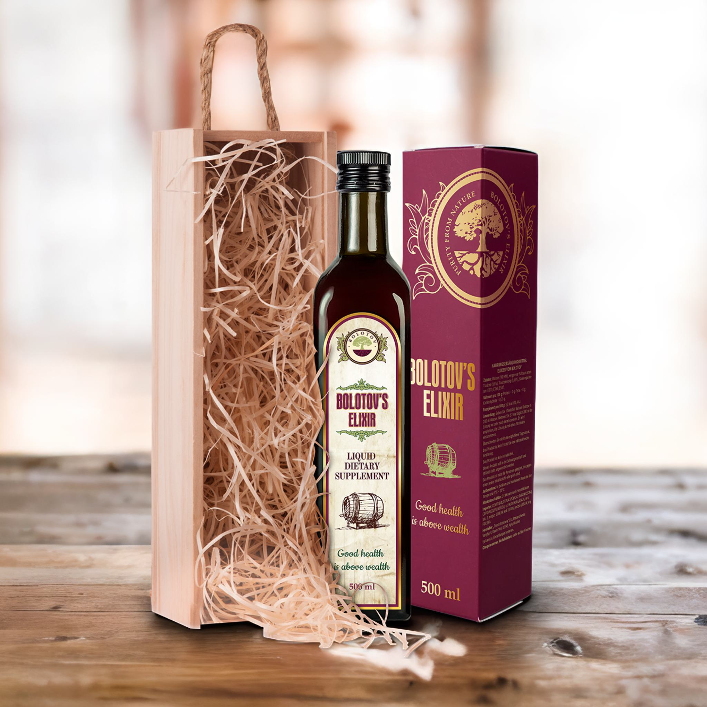
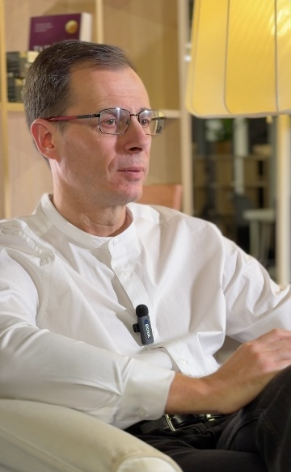
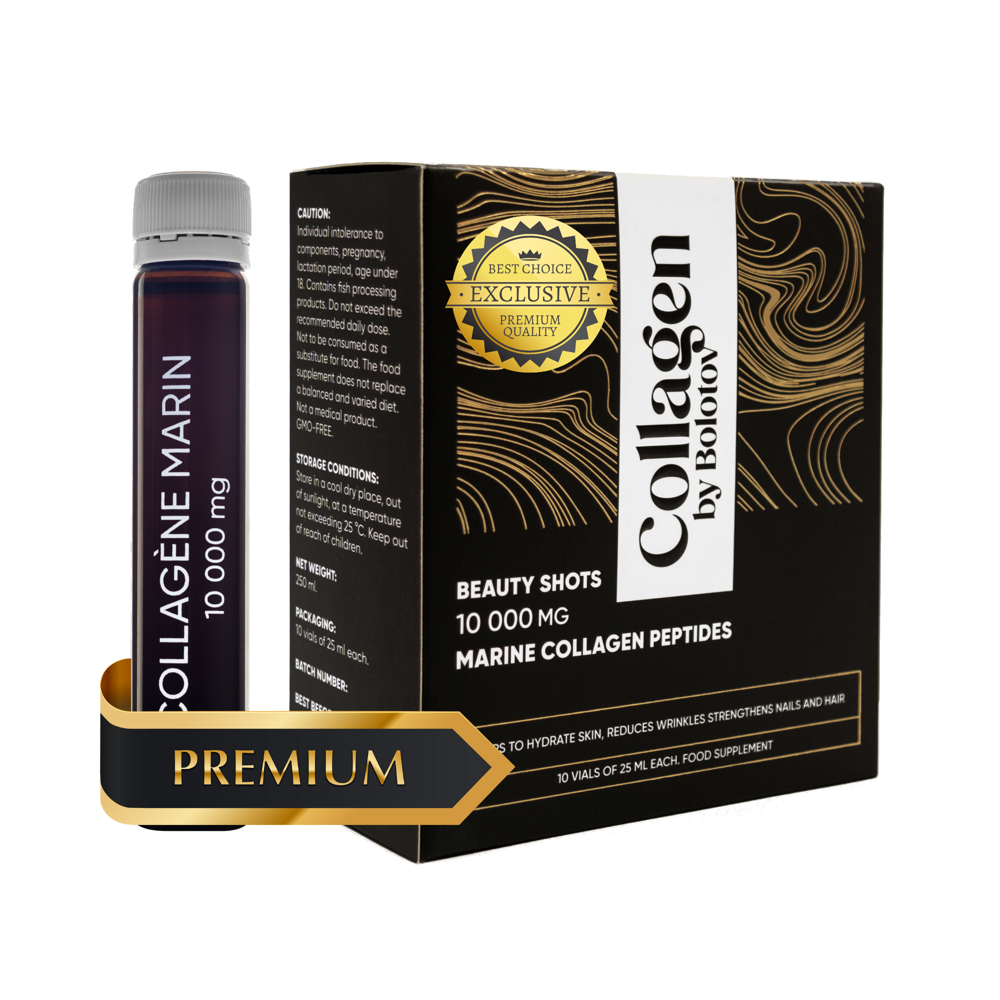
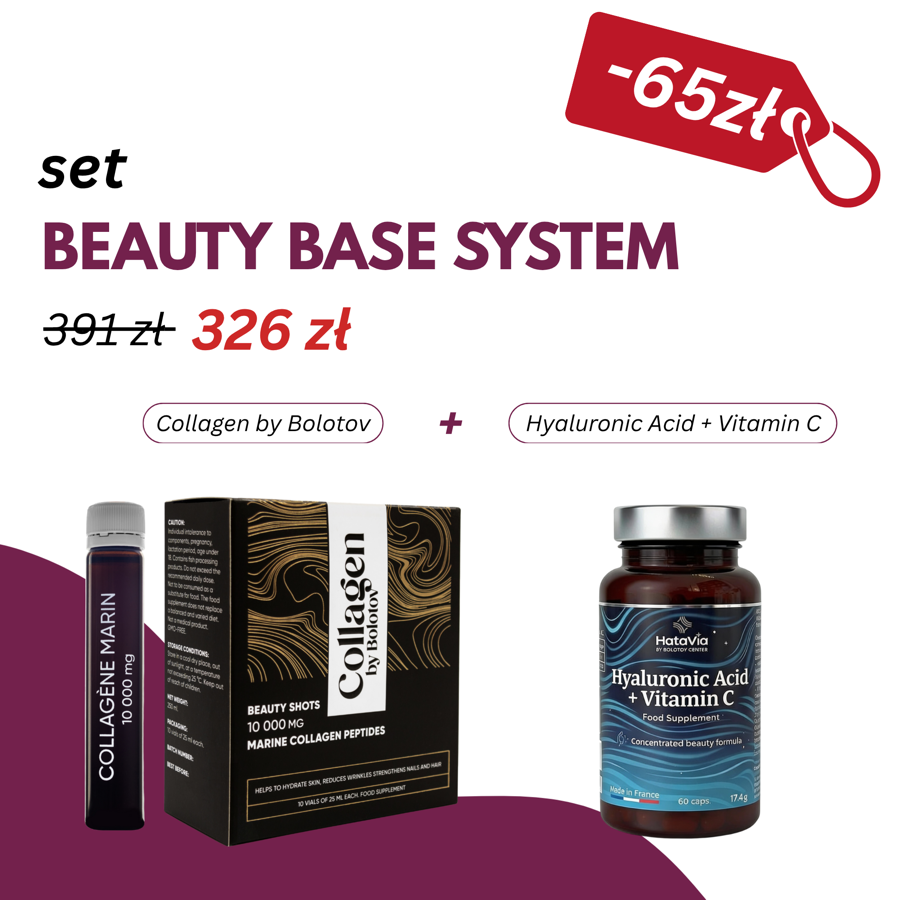
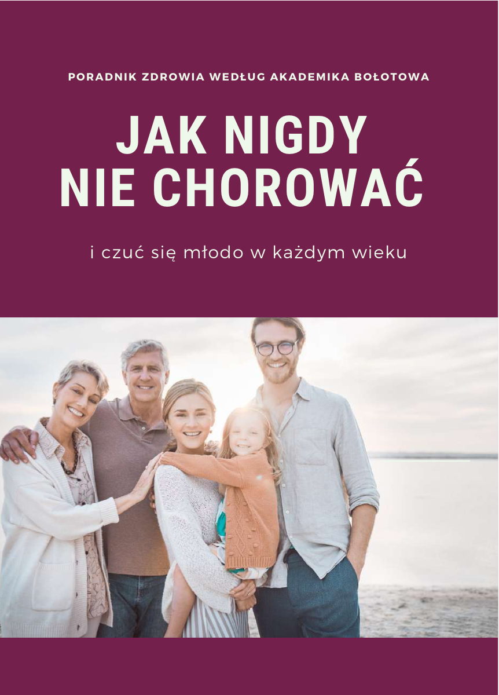

Balzám Bolotova
Náš hlavní produkt na základě metod akademika Bolotova. Ověřený tisíci lidí po celé Evropě.
ZobrazitZdravý život v každém věku — je to reálné.
Naším posláním je zprostředkovat každému člověku na planetě jednu myšlenku: zdravým lze být v každém věku. Vytváříme produkty, knihy a vzdělávací materiály založené na metodách akademika Borise Bolotova.
let výroby produktů podle metod Bolotova
vědeckých výzkumů a patentů vytvořených akademikem B. Bolotovem
spokojených klientů po celé Evropě
Boris Vasiljevič Bolotov — vědec, vynálezce a lidový akademik, který celá desetiletí věnoval studiu procesů probíhajících v lidském těle.
Jeho výzkum propojoval poznatky z chemie, fyziky a biologie a směřoval k pochopení toho, jak výživa, životní styl a vnitřní rovnováha těla navzájem souvisejí.
V roce 1990 získal Boris Bolotov titul „Lidový akademik“. Jeho vědecké myšlenky se rozšířily do celého světa a staly se základem systému výživy a životního stylu, který dnes uplatňují tisíce lidí.

„Organismus má obrovský potenciál samoregulace. Důležité je vytvořit podmínky, ve kterých tyto procesy mohou fungovat přirozeně.“
B. Bolotov

zakladatel a odborník Centra Bolotova
Jmenuji se Oleg a jsem zakladatelem Centra Bolotova.
Dlouhou dobu jsem po jídle cítil těžkost a diskomfort — téměř každý den, po snídani i po obědě. Řešení jsem nehledal a zvykl si myslet, že to tak prostě musí být. Časem mě jídlo přestalo těšit: sednete si ke stolu a předem myslíte na to, jak se budete cítit potom.
Tak jsem poznal akademika Borise Bolotova — biochemika a vědce, který se řadu let zabýval výživou a trávicím komfortem. Upřímně řečeno jsem tomu příliš nevěřil. Přesto jsem se rozhodl jeho přístup k výživě a jeho recepturu zkusit — jako součást každodenní rutiny.
Po několika týdnech jsem se přistihl u jednoduché myšlenky: jídlo mě zase těší. Z pocitem lehkosti, bez zbytečných myšlenek na to, co bude potom. Pro mě se to ukázalo jako nejdůležitější.
Právě tehdy jsem akademikovi navrhl vytvoření Centra Bolotova — aby byl tento přístup dostupný i ostatním.
„Metody akademika Bolotova studuji již více než 10 let. Za tu dobu jsem pomohl stovkám lidí pochopit, co se děje s jejich zdravím — a najít přístup, který skutečně funguje právě pro ně. Pro mě to není práce, ale přesvědčení.“
Osobní zkušenost autora; je individuální a není příslibem zdravotních účinků. Doplněk stravy není léčivým přípravkem.
Naše filozofie vychází z myšlenky podpory přirozených funkcí organismu prostřednictvím výživy, životního stylu a vyvážených produktů.
Naše produkty vznikají na základě pečlivě vybraných složek potravinářské kvality a receptur vypracovaných na základě výzkumů akademika Bolotova a dlouholetých praktických zkušeností.
S věkem se potřeby těla mění. Správná výživa a pozorný přístup k vlastnímu stavu pomáhají udržovat energii, vitalitu a dobrou pohodu.
Proto každý produkt Centra Bolotova vzniká na moderním zařízení s úplnou kontrolou kvality — od surovin až po balení.

Náš hlavní produkt na základě metod akademika Bolotova. Ověřený tisíci lidí po celé Evropě.
Zobrazit
Mořský kolagen pro ty, kterým záleží na pleti, kloubech a pružnosti těla zevnitř.
Zobrazit
Hotové sady produktů sestavené podle témat — praktické spojení několika produktů v jednom balíčku, za výhodnější cenu než při nákupu zvlášť. Ideální na start i jako plná kúra.
Zobrazit
Získejte BEZPLATNÉHO průvodce systémem Bolotova — jednoduché principy výživy a životního stylu.